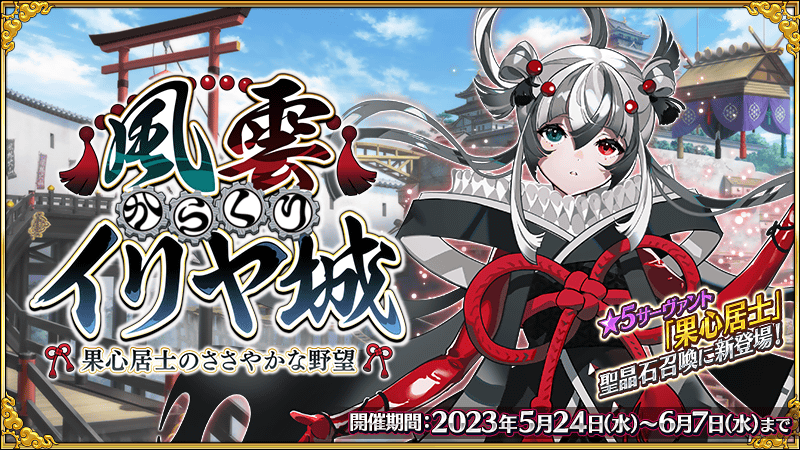
◆公告的主要追記・更新履歴◆
【5月27日(六) 17:00追記】NEW
・自由關卡 第二關門舞台的情報追加！
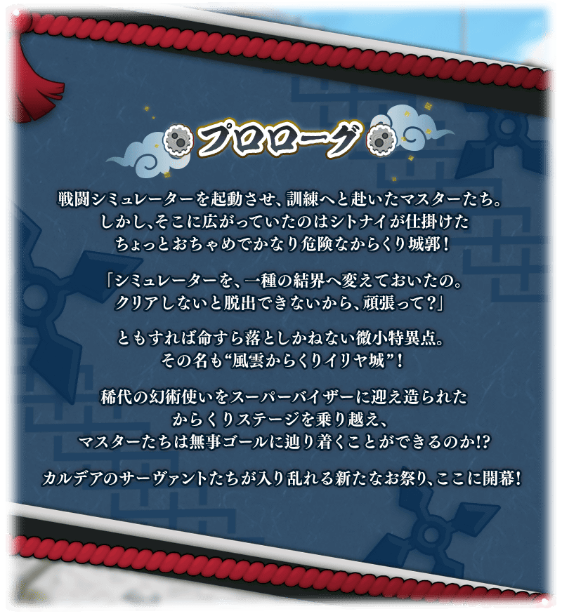
期間限定活動「風雲機關伊莉雅城 ～果心居士的小小野望～」自2023年5月24日(三)開幕！
在戰鬥模擬裝置內構築的微小特異點“風雲機關伊莉雅城”為舞台，攻略富有變化的舞台，以終點為目標！
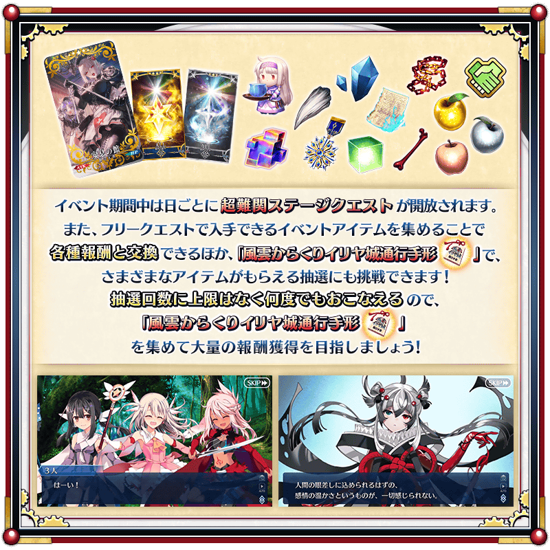
◆活動舉辦期間(2週間)◆
2023年5月24日(三) 19:00～6月7日(三) 11:59
◆活動參加條件◆
滿足以下條件的御主才能參加
・通過「特異點F 炎上汙染都市 冬木」
※本頁面皆為開發中圖片。會有與實際圖片相異的情況。 ※一部份的關卡為日後開放。
由於在「Fate/Grand Order 迦勒底放送局 輕量版 FGO Fes. 2023＆遊戲最新情報」2則對象推特的RT合計數達成7萬轉推，實施放送記念登入獎勵！
在下述期間中登入的話，贈送聖晶石14個。
◆領取期間◆
2023年5月25日(四) 3:00～6月1日(四) 2:59
上述期間中，在初次登入到「Fate/Grand Order」的時間點，贈予到禮物箱。
※期間內未登入的話無法領取。
※禮物只能領取1次。
◆贈送內容◆
聖晶石 14個
◆贈送對象◆
2023年5月25日(四) 2:59前通過「特異點F 炎上汙染都市 冬木」的御主對象
※上述時間前，在管理室(ターミナル)畫面的關卡橫幅必須要有「CLEAR」的文字顯示。
期間限定活動「風雲機關伊莉雅城 ～果心居士的小小野望～」中，在通過自由關卡時可入手能交換各種報酬的活動道具外，收集「風雲機關伊莉雅城通行證」的話可挑戰給予各式各樣道具的抽選。
另外，通過逐日開放的超難關舞台關卡後，可獲得呼符。
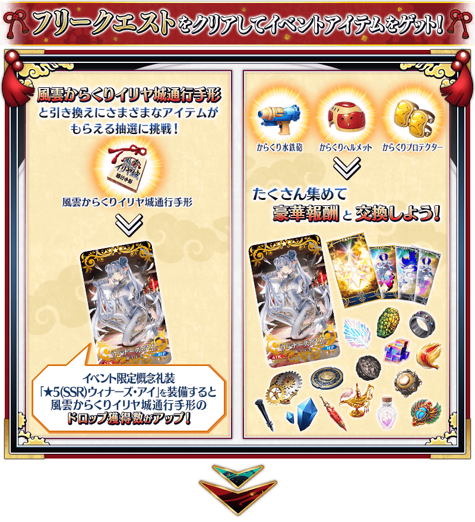 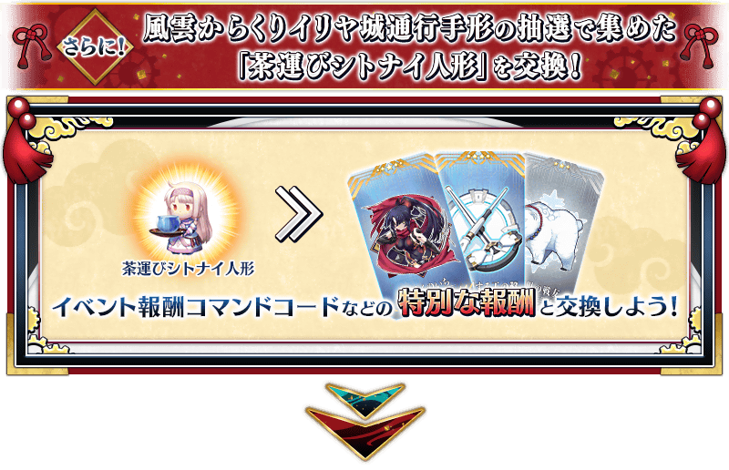 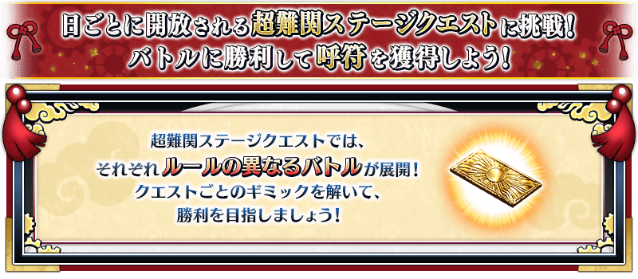
活動關卡將逐日開放，通過更之前的活動關卡後即可挑戰。
另外，收集活動道具的自由關卡，會根據時間表的進行開放。
自由關卡請注意每個關卡有各自的舉辦期間，超過後就算是活動舉辦中也無法挑戰。
※後記(エピローグ)會在通過所有的超難關舞台關卡後開放。
【關卡的舉辦期間】
| 關卡的種類 | 開始時間 | 結束時間 |
|---|---|---|
|
序幕(プロローグ) 【超難關舞台關卡1】 |
2023年5月24日(三) 19:00 | 2023年6月7日(三) 11:59 |
| 自由關卡 第一關門舞台 | 2023年5月27日(六) 16:59 | |
| 【超難關舞台關卡2】 | 2023年5月25日(四) 17:00 | 2023年6月7日(三) 11:59 |
| 【超難關舞台關卡3】 | 2023年5月26日(五) 17:00 | 2023年6月7日(三) 11:59 |
| 【超難關舞台關卡4】 | 2023年5月27日(六) 17:00 | 2023年6月7日(三) 11:59 |
| 自由關卡 第二關門舞台 | 2023年5月30日(二) 16:59 | |
| 【超難關舞台關卡5】 | 2023年5月28日(日) 17:00 | 2023年6月7日(三) 11:59 |
| 【超難關舞台關卡6】 | 2023年5月29日(一) 17:00 | 2023年6月7日(三) 11:59 |
|
自由關卡 第三關門舞台 後記(エピローグ) |
2023年5月30日(二) 17:00 | 2023年6月7日(三) 11:59 |
超難關舞台關卡是逐日開放的本活動獨有關卡。
關卡全存在6種類，各自以特殊的不同規則發展！
通過關卡後，可獲得呼符做為報酬。
超難關舞台關卡依下述時間表開放，通過更之前的超難關舞台關卡後即可挑戰。
※超難關舞台關卡並非【高難易度關卡】【超高難易度關卡】，而是推薦Lv.80的關卡。

在戰鬥開始前的隊伍確認畫面，會說明各關卡的遊玩方式。
確認戰鬥的規則，以通過關卡為目標吧！
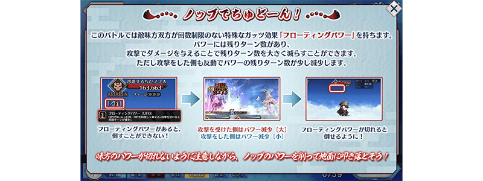
【關卡的舉辦期間】
| 關卡的種類 | 舉辦期間 |
|---|---|
| 【超難關舞台關卡1】 |
2023年5月24日(三) 19:00～ 6月7日(三) 11:59 |
| 【超難關舞台關卡2】 |
2023年5月25日(四) 17:00～ 6月7日(三) 11:59 |
| 【超難關舞台關卡3】 |
2023年5月26日(五) 17:00～ 6月7日(三) 11:59 |
| 【超難關舞台關卡4】 |
2023年5月27日(六) 17:00～ 6月7日(三) 11:59 |
| 【超難關舞台關卡5】 |
2023年5月28日(日) 17:00～ 6月7日(三) 11:59 |
| 【超難關舞台關卡6】 |
2023年5月29日(一) 17:00～ 6月7日(三) 11:59 |
【5月27日(六) 17:00更新】
活動期間中，會出現多位從者登場的自由關卡。
自由關卡有7階段的難易度，各自登場的從者和報酬等有所變化。
另外，透過時間表的進行，關卡的種類會從「第一關門舞台」變化，因此關卡內容也會變化。
請注意每個關卡有各自的舉辦期間，超過後就算是活動舉辦中也無法挑戰。
◆自由關卡舉辦期間◆
| 關卡的種類 | 舉辦期間 |
|---|---|
| 第一關門舞台 | 2023年5月24日(三) 19:00～5月27日(六) 16:59 |
| 第二關門舞台 | 2023年5月27日(六) 17:00～5月30日(二) 16:59 |
| 第三關門舞台 | 2023年5月30日(二) 17:00～6月7日(三) 11:59 |
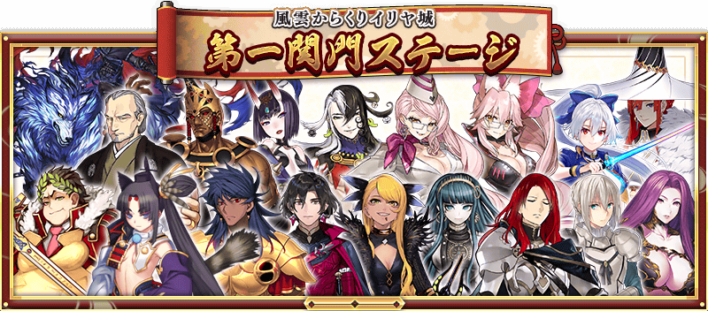
| 關卡 | 推薦Lv. | 消耗AP |
|---|---|---|
| 第一關門 登竜滝 | 25 | 30 |
| 第一關門 けものバスター | 40 | 35 |
| 第一關門 解放への扉 | 60 | 40 |
| 第一關門 ザ･ファーストダウン | 80 | |
| 第一關門 あやかし屋敷 | 90 | |
| 第一關門 序の関所・陽の道 | 90+ | |
| 第一關門 序の関所・陰の道 | 90++ |
| 關卡 | 推薦Lv. | 消耗AP |
|---|---|---|
| 第二関門 おむすび坂 | 25 | 30 |
| 第二関門 ゴブリンワールド | 40 | 35 |
| 第二関門 いっすんボート | 60 | 40 |
| 第二関門 槍玉ＲＵＮ | 80 | |
| 第二関門 さむらいＺＡＮ | 90 | |
| 第二関門 破の関所・騎士の道 | 90+ | |
| 第二関門 破の関所・戦士の道 | 90++ |
在活動關卡收集「風雲機關伊莉雅城通行證」，交換比賽獎品吧！
會透過抽選進行比賽獎品的交換。
比賽獎品在各陣容會放入1個「大獎」。
抽到大獎，點擊「比賽獎品更新」的話，會換成新的大獎，切換到下個陣容。
另外，抽到所有比賽獎品後就結束，會自動切換到下個陣容。
放入「大獎」的陣容有10次份！
獲得「大獎」，注目的禮物都沒了的話，就點擊「比賽獎品更新」來補充「大獎」吧！
※比賽獎品抽選的第1次～第10次，抽到「大獎」會顯示「比賽獎品更新」。 ※第11次以後，不會顯示「比賽獎品更新」，而是在所有比賽獎品都沒了時自動切換到下個陣容。 ※第11次以後，不會更新「大獎」及「黃金果實」「白銀果實」。 ※收集在比賽獎品陣容中有的活動道具「茶運志度內人偶」可交換活動限定指令紋章等特別的報酬。 ※在交換期間結束後「風雲機關伊莉雅城通行證」會消失。
◆風雲機關伊莉雅城通行證交換期間(3週內)◆
2023年5月24日(三) 19:00～6月14日(三) 11:59
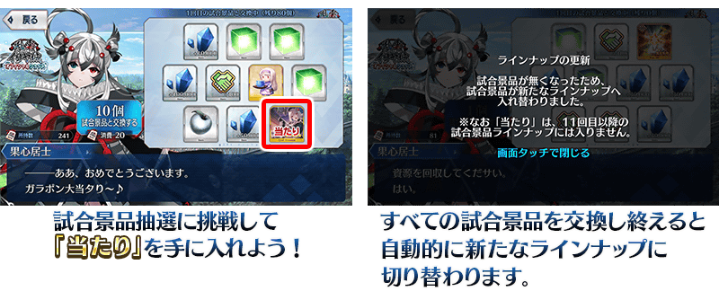
第11次以後1次最多能交換100個
放入「大獎」的第10次以前陣容的比賽獎品交換完後，從第11次以後的陣容，1次最多可交換100個比賽獎品。
※「風雲機關伊莉雅城通行證」沒到可交換100個的情況。屆時可給予最大數為止的比賽獎品。
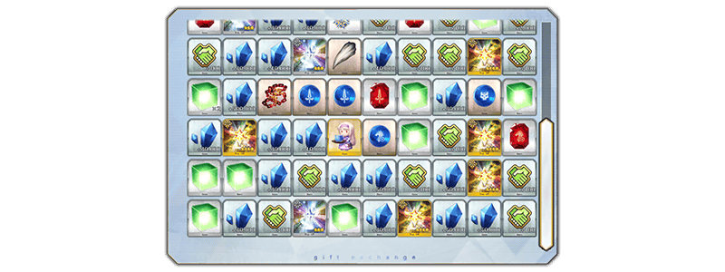
◆比賽獎品陣容◆
【大獎】
| 陣容次數 | 大獎 | ||
|---|---|---|---|
| 第1～5次 | 活動限定概念禮裝★5(SSR)「安息の館」 | ||
| 第6次 |

|
傳承結晶 | |
| 第7～10次 |

|
英靈結晶・流星之芙芙ALL★4(HP) | |
【比賽獎品】
| 種類 | 比賽獎品 | ||
|---|---|---|---|
| 活動道具 | 茶運志度內人偶 | ||
| 技能強化＆靈基再臨素材 |
禁斷書頁 大騎士勳章 愚者之鎖 龍之牙 凶骨 |
||
| 技能強化素材 |
劍之秘石 弓之秘石 槍之秘石 騎之秘石 術之秘石 殺之秘石 狂之秘石 劍之魔石 弓之魔石 槍之魔石 騎之魔石 術之魔石 殺之魔石 狂之魔石 劍之輝石 弓之輝石 槍之輝石 騎之輝石 術之輝石 殺之輝石 狂之輝石 |
||
| 其他道具 |
睿智的猛火ALL★4(SR) 睿智的大火ALL★3(R) 黃金果實 ※第10次為止 白銀果實 ※第10次為止 赤銅果實 魔力稜鏡 QP 友情點數 |
||
超值攻略方法・其1
本活動的期間中，下表的從者在活動關卡會得到「自身的攻擊威力提升」與「絆點數獲得量提升」的加成！
強化對象從者，挑戰活動吧！
※活動加成的效果量因從者而異。
【活動加成的效果與對象從者】
| 自身的 攻擊威力 |
絆點數 獲得量 |
職階 | 稀有度 | 從者名 |
|---|---|---|---|---|
| ＋100% | 只限自身 ＋50% |
Assassin | ★★★★★ | 果心居士 |
| ＋50% | 只限自身 ＋20% |
Archer | ★★★★ | 克洛伊・馮・愛因茲貝倫 |
| Caster | ★★★★★ | 伊莉雅絲菲爾・馮・愛因茲貝倫 | ||
| ★★★★ | 美遊・艾蒂菲爾特 | |||
| Assassin | ★★★★ | 加藤段藏 | ||
| ★★★ | 風魔小太郎 | |||
| Alterego | ★★★★★ | 志度內 |
※自5月24日(三) 19:00，在從者選擇畫面和從者強化畫面等，追加活動加成篩選器。由於是只顯示於活動活躍從者的便利功能，敬請活用。
超值攻略方法・其2
裝備活動限定概念禮裝與期間限定概念禮裝的話，在本活動中會受到各式各樣的恩惠。
裝備可靠比賽獎品抽選入手的活動限定概念禮裝「★5(SSR)安息の館」的話，在期間限定活動「風雲機關伊莉雅城 ～果心居士的小小野望～」中自身的攻擊威力會提升。
另外，裝備可靠活動道具交換入手的活動限定概念禮裝「★5(SSR)ウィナーズ・アイ」的話，活動道具「風雲機關伊莉雅城通行證」的掉落獲得數提升！
另外，裝備在聖晶石召喚Pick Up的期間限定概念禮裝「★5(SSR)錦の姫」「★4(SR)巫覡八石跳」「★3(R)ギミック・マスター」的話，活動道具「機關水鐵砲」「機關頭盔」「機關護具」各自的掉落獲得數會提升。
※請注意各關卡的道具掉落率並非100％。
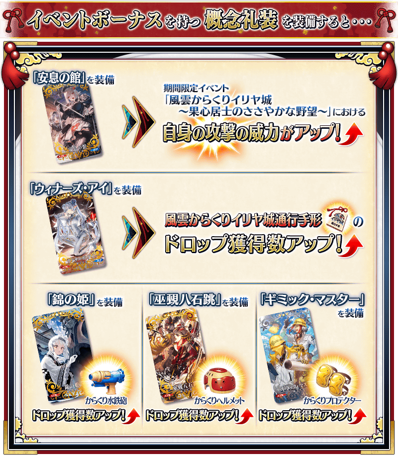
| 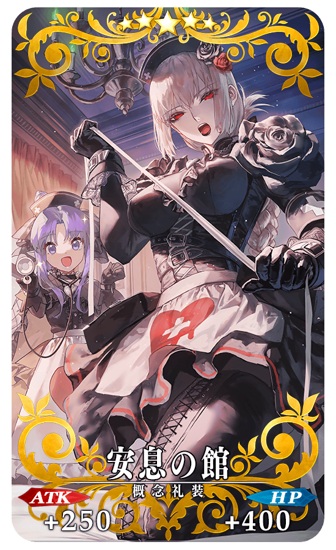 |
★★★★★SSR
◆最大解放時效果◆
|
| 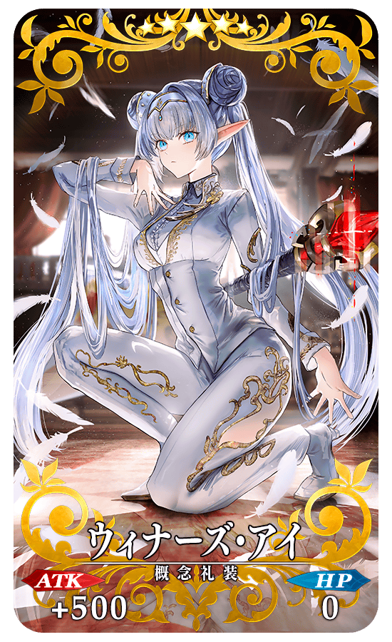 |
★★★★★SSR
◆最大解放時效果◆
|
|
【活動限定】 |

|
★★★★SR |
|
★★★R |
活動道具可自點擊管理室(ターミナル)畫面右上「活動報酬」鍵所顯示的「活動道具交換」畫面，交換以下的道具。
※關於傳承結晶、英靈結晶・日輪之芙芙ALL★4(ATK)的交換，通過本活動的主線關卡後才能交換。 ※活動道具交換期間結束後「茶運志度內人偶」「機關水鐵砲」「機關頭盔」「機關護具」會消失。
◆交換期間(3週間)◆
2023年5月24日(三) 19:00～6月14日(三) 11:59
◆能用茶運志度內人偶交換的道具◆
|
【活動報酬指令紋章】 【技能強化＆靈基再臨素材】 【其他道具】 |
◆能用機關水鐵砲交換的道具◆
|
【活動限定概念禮裝】 【技能強化＆靈基再臨素材】 【靈基再臨素材】 【其他道具】 |
◆能用機關頭盔交換的道具◆
| 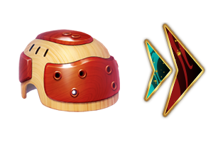 |
【活動限定概念禮裝】 【技能強化＆靈基再臨素材】 【靈基再臨素材】 【其他道具】 |
◆能用機關護具交換的道具◆
|
【活動限定概念禮裝】 【技能強化＆靈基再臨素材】 【其他道具】 |
在期間限定活動「風雲機關伊莉雅城 ～果心居士的小小野望～」的特設頁面，智慧型手機用桌面的贈送實施中！
在社群媒體分享特設頁面就能下載，請務必使用。
◆配布期間(2週內)◆
2023年5月24日(三) 19:00～6月7日(三) 11:59
◆特設頁面◆
https://www.fate-go.jp/special/2023-illya_castle/
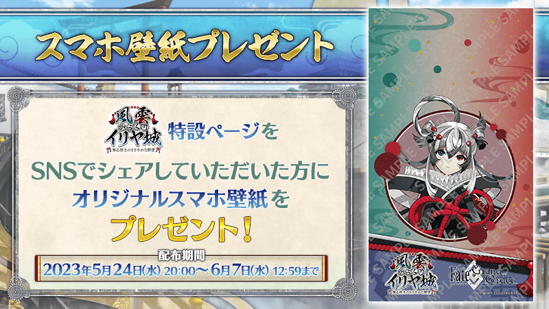
【5月28日(日) 17:00追記】
其他還有期間限定「風雲機關伊莉雅城 果心居士Pick Up召喚」等的情報公開中！
關於詳情，請自下述橫幅確認。
■「風雲機關伊莉雅城 果心居士Pick Up召喚」詳細情報

■「風雲機關伊莉雅城 伊莉雅絲菲爾・馮・愛因茲貝倫(Caster)Pick Up召喚」詳細情報

■「風雲機關伊莉雅城 志度內Pick Up召喚」詳細情報